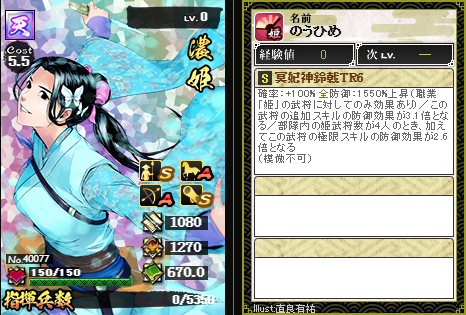

濃姫 No.40077

濃姫のうひめ
ステータス
| 攻撃 | 防御 | 兵法 |
|---|---|---|
| 1080 (+48) | 1270 (+74) | 670 (+3.5) |
統率
| 槍: S | 弓: A | 馬: A | 器: S |
スキル
冥妃神鈴戟
S/TR6 確率 100% 防御 1550%上昇/対象:全
模倣不可
①防御が1550%上昇する(職業「姫」の武将に対してのみ効果あり)
②この武将の追加スキルの防御効果が3.1倍となる
③部隊内の姫武将数が4人のとき加えてこの武将の極限スキルの防御効果が2.6倍となる
模倣不可
①防御が1550%上昇する(職業「姫」の武将に対してのみ効果あり)
②この武将の追加スキルの防御効果が3.1倍となる
③部隊内の姫武将数が4人のとき加えてこの武将の極限スキルの防御効果が2.6倍となる
鍛錬レベル別性能
| レベル | 必要ポイント | 効果 |
|---|---|---|
| LV10 | - | 全 確率 100% / 防御 1000%上昇(職業「姫」の武将に対してのみ効果あり) / この武将の追加スキルの防御効果2.5倍、部隊内の姫武将数が4人のとき加えてこの武将の極限スキルの防御効果2倍(模倣不可) |
| TR1 | 10 | 全 確率 100% / 防御 1060%上昇(職業「姫」の武将に対してのみ効果あり) / この武将の追加スキルの防御効果2.6倍、部隊内の姫武将数が4人のとき加えてこの武将の極限スキルの防御効果2.1倍(模倣不可) |
| TR2 | 40 | 全 確率 100% / 防御 1140%上昇(職業「姫」の武将に対してのみ効果あり) / この武将の追加スキルの防御効果2.7倍、部隊内の姫武将数が4人のとき加えてこの武将の極限スキルの防御効果2.2倍(模倣不可) |
| TR3 | 90 | 全 確率 100% / 防御 1240%上昇(職業「姫」の武将に対してのみ効果あり) / この武将の追加スキルの防御効果2.8倍、部隊内の姫武将数が4人のとき加えてこの武将の極限スキルの防御効果2.3倍(模倣不可) |
| TR4 | 150 | 全 確率 100% / 防御 1360%上昇(職業「姫」の武将に対してのみ効果あり) / この武将の追加スキルの防御効果2.9倍、部隊内の姫武将数が4人のとき加えてこの武将の極限スキルの防御効果2.4倍(模倣不可) |
| TR5 | 200 | 全 確率 100% / 防御 1500%上昇(職業「姫」の武将に対してのみ効果あり) / この武将の追加スキルの防御効果3倍、部隊内の姫武将数が4人のとき加えてこの武将の極限スキルの防御効果2.5倍(模倣不可) |
| TR6 | パラレル | 全 確率 100% / 防御 1550%上昇(職業「姫」の武将に対してのみ効果あり) / この武将の追加スキルの防御効果3.1倍、部隊内の姫武将数が4人のとき加えてこの武将の極限スキルの防御効果2.6倍(模倣不可) |
合成素材にした場合の候補スキル
| 候補 | 初期スキル | 移植後合成候補 |
|---|---|---|
| A | 蝮遺蝶刃 S 対象:全 確率55% 攻撃 1590%上昇+防御 1590%上昇(職業「姫」の武将に対してのみ効果あり) | 蝮遺蝶刃 S 対象:全 確率55% 攻撃 1590%上昇+防御 1590%上昇(職業「姫」の武将に対してのみ効果あり) |
| B | 舞姫武神 SS 対象:全 確率100% 攻撃 910%上昇 防御 910%上昇 | 舞姫武神 SS 対象:全 確率100% 攻撃 910%上昇 防御 910%上昇 |
| C | 梵天浄界 SSS 対象:全 確率60% 防御 50%上昇+破壊 150%上昇(10×防御参加武将数(280人)=2800%を防御効果に加算) | 梵天浄界 SSS 対象:全 確率60% 防御 50%上昇+破壊 150%上昇(10×防御参加武将数(280人)=2800%を防御効果に加算) |
| S1 | 虚妄ノ神蛇 SSS 対象:全 確率50% 防御 14.8%×防御参加武将数(280人)=4144.0% | 虚妄ノ神蛇 SSS 対象:全 確率50% 防御 14.8%×防御参加武将数(280人)=4144.0% |
| S2 | 美人剛腕 S 対象:全 確率55% 防御 780%上昇(職業「姫」の武将に対してのみ効果あり) | 美人剛腕 S 対象:全 確率55% 防御 780%上昇(職業「姫」の武将に対してのみ効果あり) |
Illust. 直良有祐
この武将について
| 登場した章 | 32章 |
|---|---|
| 兵科 | 全防 |
| 効果の要約 | 姫武将のみ防御上昇、追加スキルの防御効果2.5倍(姫4人で極限スキルの防御効果2倍) |